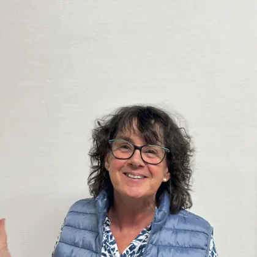
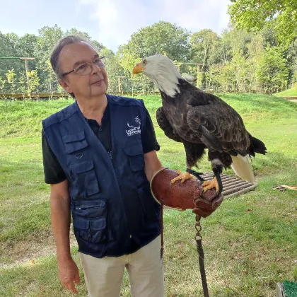
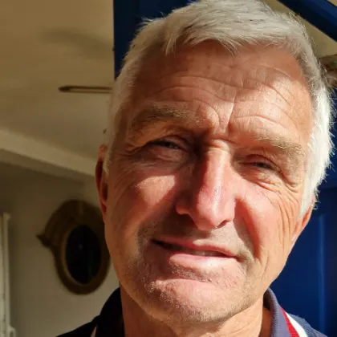

Accueil · Le bureau
L'équipe qui fait tourner l'association
Six bénévoles organisent les visites, gèrent les dons et coordonnent la vingtaine de magiciens de l'association.
Denis VovardPrésident

Isabelle ManissierSecrétaire
Stéphane SaleTrésorier

François ManissierMembre du bureau
Gontran de VillèleMembre du bureau

Philippe CampionMembre du bureau
Vous pratiquez la magie ? Rejoignez-nous.
Nous accueillons les magiciens amateurs prêts à donner un peu de leur temps aux enfants hospitalisés.